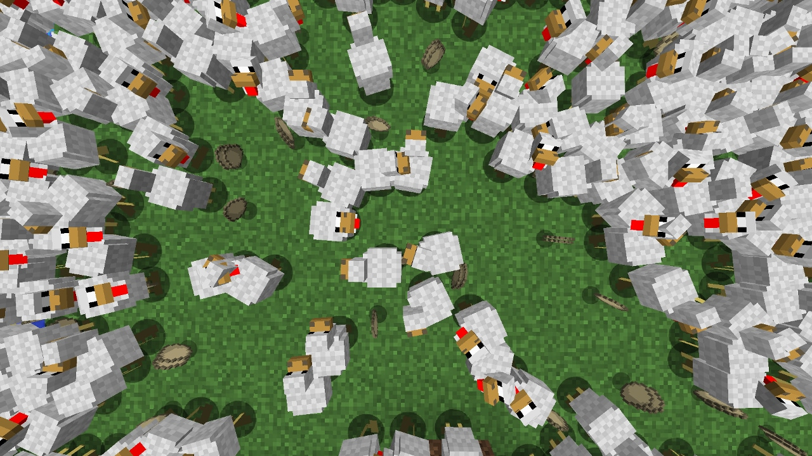

Introduction
Mine-Craft.io is a free-to-play multiplayer browser game that delivers a comprehensive Minecraft-like building and crafting experience directly to your web browser. What makes it unique is its massive integration of mini-games and a player-driven economy, all accessible without downloads. Players love it because it combines classic survival mechanics with diverse game modes like SkyWars, BedWars, and SkyBlock, alongside unique modes like OneBlock and AmongUs. You can explore biomes like the Overworld and Nether, build complex mechanisms, and even establish your own in-game business. With daily rewards, community events, and the ability to create custom servers, Mine-Craft.io offers endless replayability and a vibrant multiplayer ecosystem right at your fingertips.
Getting Started

Starting in Mine-Craft.io is seamless since it runs entirely in your web browser. Simply visit the official website and jump into the Overworld, the public world featuring a safe zone at the center. Your first step is to gather basic resources by mining caves or chopping trees to craft essential tools. Familiarize yourself with the core controls for movement, block placement, and mining. You can choose between Survival PvE to fight hostile mobs, Survival PvP to battle other players, or Creative mode, which grants infinite resources and invisibility for unrestricted building. As you progress, eat food to maintain health and craft armor to protect yourself from nighttime mobs. Don't forget to claim your daily rewards and explore the various mini-games available in the lobby to earn your first medals and experience the diverse gameplay loops Mine-Craft.io has to offer. Once comfortable, start exploring the dangerous Nether biome for better loot and rare materials.
Basic Tips
1. Secure your base before nightfall: In Survival modes, hostile mobs spawn at night. Build a simple dirt or wood shelter immediately to protect yourself. 2. Explore the safe zone: The Overworld center is a safe zone. Use this area to trade safely with other players without worrying about PvP attacks. 3. Play mini-games for quick rewards: Jump into SkyBlock or OneBlock to learn resource management. Winning these games earns medals that you can sell in the Shop for extra currency. 4. Start a basic mob farm: Farming mobs is a reliable way to get early loot. Sell this loot in player stores to fund your initial gear upgrades. 5. Stick to Creative mode for practice: If you are new to building mechanisms or houses, use Creative mode. You get infinite resources and can place any block without the pressure of dying, allowing you to experiment freely with commands and mob spawning.
Advanced Strategies

1. Hunt for high-level enchantments: Focus your mining and mob farming efforts on finding rare items, specifically OP swords and armor with enchantments above level 30. These sell for massive profits in player stores. 2. Establish a specialized store: Instead of just selling raw loot, create your own business. Stock your store with high-value items like Charms, Totems, and high-level enchantment books to attract wealthy buyers. 3. Master BedWars and SkyWars: These mini-games require intense PvP skills. In BedWars, prioritize protecting your bed while coordinating with your team to destroy the opponent's bed, using the islands for tactical cover. 4. Create custom servers: Use the server creation tools to build private worlds. This allows you to store massive amounts of resources, build elaborate houses, and invite friends to play in a controlled environment without public server interference, giving you complete control over the world's rules and resource distribution.
Pro Tips

1. Dominate the player economy: Monitor the market for rare OP gear. Buy undervalued level 30+ enchanted items from casual players and resell them at a premium in your own high-traffic store. 2. Exploit Hide & Seek mechanics: When playing Hide & Seek, don't just blend in with identical blocks. Use environmental noise and map geometry to break the seeker's line of sight, making you virtually invisible. 3. Optimize OneBlock mining: In OneBlock, mine the central block rhythmically and clear the drops immediately to prevent lag and ensure you never miss a rare random block spawn. 4. Leverage community events: Participate actively in official giveaways and community events, as they often distribute exclusive items that hold high resale value later.
Conclusion
Mine-Craft.io brilliantly captures the classic block-building and survival experience while adding deep mini-games and a thriving player economy. Whether you want to survive the dangerous Nether, dominate BedWars, or build a lucrative in-game business, there is truly something for everyone. Grab your pickaxe, jump into the browser, and start crafting your legacy today!